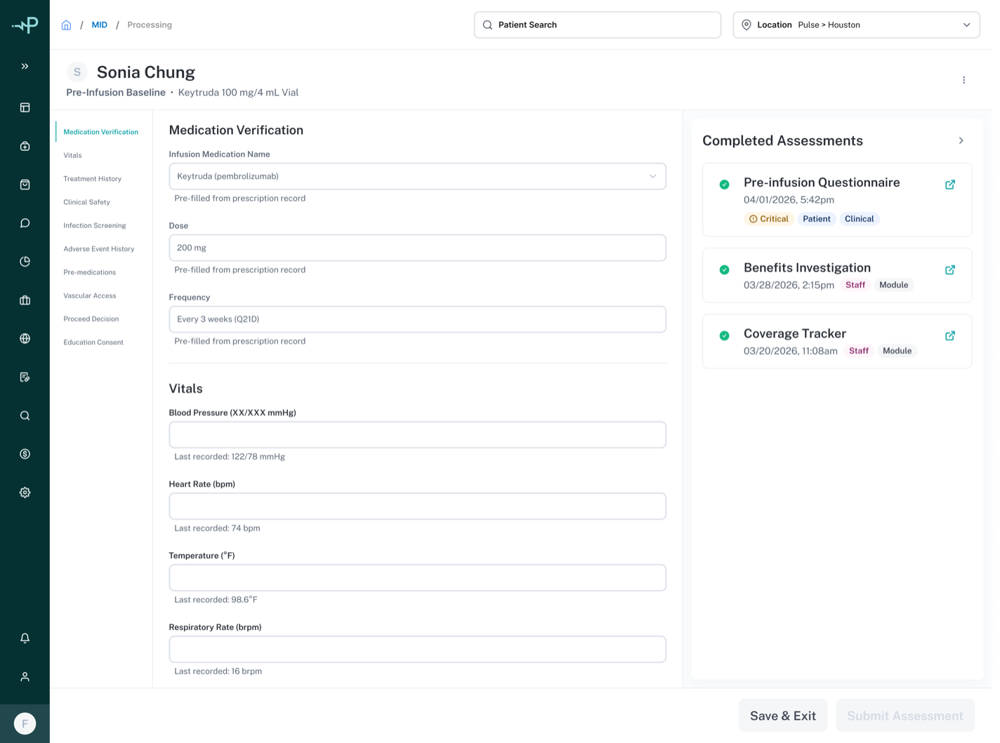
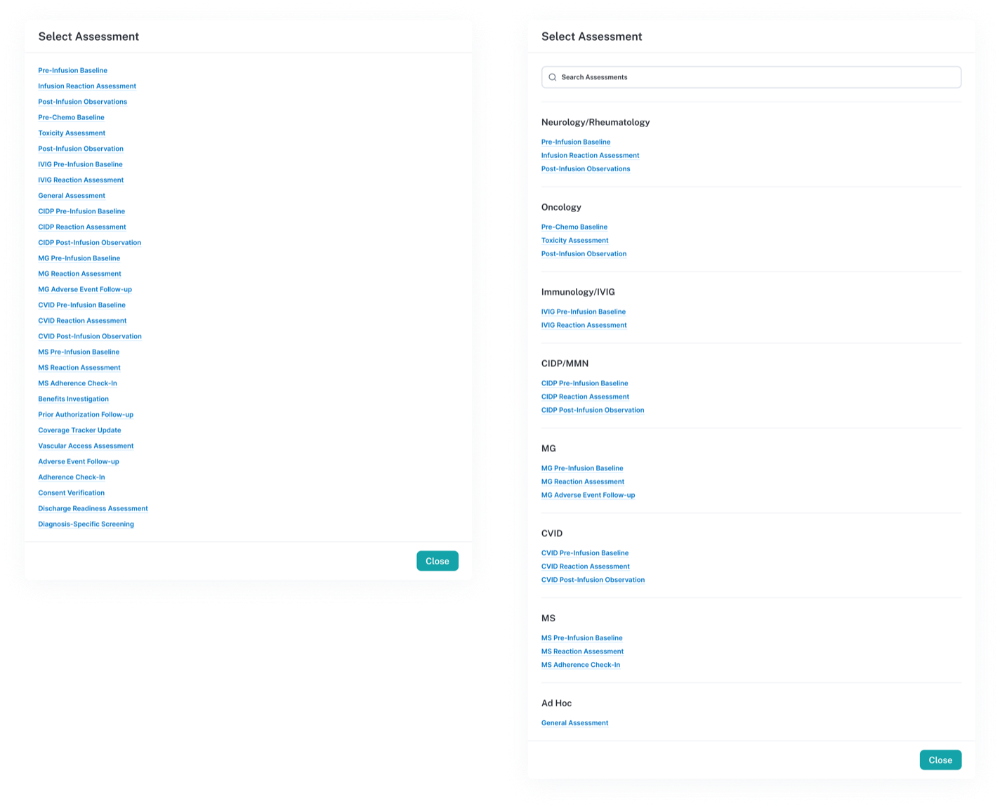
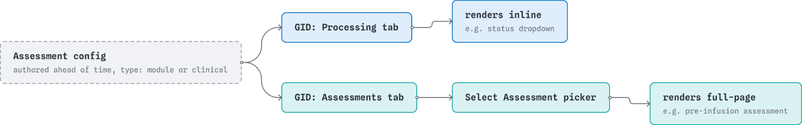
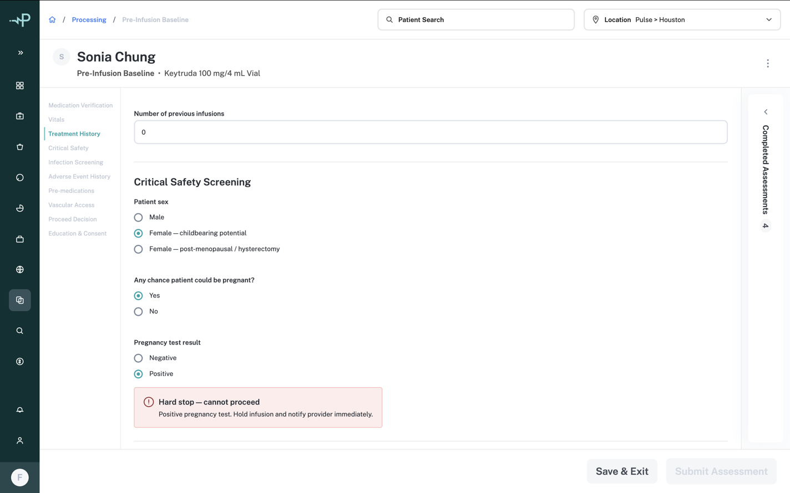
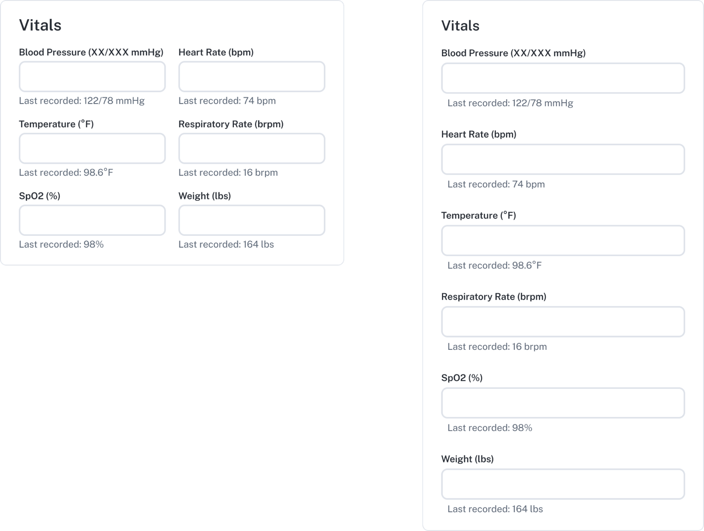

CASE STUDY
Designed the framework OnePulse Connect uses to select, complete, and review clinical and module-level assessments at scale, then used pre-infusion assessments, the most demanding case in the catalog, to pressure-test it against real branching logic and hard safety stops.

The assessment system in OnePulse started with a single, straightforward case: a nurse fills out a pre-infusion form for one therapy. As real data came in, from a clinical branching-logic spreadsheet covering therapy groups like Neuro/Rheum, MS, CIDP/MMN, and CVID, it became clear that assessments weren't one thing. Each one carried several independent dimensions: which therapy and phase it applied to, who completed it (staff on-site or a patient completing it remotely), where it fell in the infusion timeline, and its own internal branching logic between questions.

A flat list of assessment cards was fine for a handful of items. But even a single therapy group could have four or more assessments across multiple phases, and with multiple therapy groups in the system, the real number was closer to 20 to 40 assessment types. The selection pattern needed to hold up at that scale.
Pre-infusion assessments gate whether a patient can proceed to treatment. Certain answers, a positive pregnancy test, a patient refusing consent, need to stop the workflow immediately rather than let a clinician click through to the next question. That's the clinical stakes layer.
The scale problem compounds it. If the pattern for finding and completing an assessment doesn't generalize, every new therapy program OnePulse adds either gets bolted onto a selection pattern that wasn't built for it, or requires the design to be redone from scratch. Getting the underlying framework right once, instead of per therapy group, is what makes the system able to grow without each addition becoming its own design project.
Two decisions came out of this. The first was how assessments get selected at scale. Two approaches were considered: a grouped list with collapsible category headers, and a search-first pattern with filter chips. The grouped list was the most familiar but still turned into a long scroll once several categories were expanded. Search-first scaled the best long-term but added complexity that wasn't justified on its own. What stuck was a hybrid of the two: a single searchable list, grouped by therapy category. Adding a new therapy group means adding one entry to that grouped structure. Adding a new assessment means adding one item to that group's list. Nothing about the layout breaks as the catalog grows.
The second decision was where a user encounters an assessment at all, and how it renders once they do. Module assessments live in the GID's Processing tab, appearing inline as part of whatever a user is already doing there (a status dropdown with a conditional reason field, for example). Clinical assessments, like pre-infusion, live behind a separate Assessments tab and open as a full page, with sections, branching logic, and hard stops. These aren't two outcomes of a shared decision a user makes in the moment, they're two separate paths, and an assessment's config determines which one it belongs to before a user ever sees it. That keeps each path simple and predictable instead of one shared path having to account for both cases. Both decisions solve how staff navigate to an assessment once they're looking for one; whether they should have to browse at all is a separate question, one that comes back later in this case study.

Pre-infusion was the right assessment to validate the framework against, not because it was the first one available, but because it was the most demanding case in the catalog: the most sections, the most branching logic, and the only assessment type carrying hard safety stops. If the framework held up here, including for a therapy group like Keytruda where the branching logic is especially dense, it would hold up for the rest of the catalog.
The clinical branching-logic data used to pressure-test the framework was the pre-infusion assessment: 35 questions (43 total, with 8 scoped to diagnosis-specific branches) organized into sections in a fixed order: Medication Verification, Vitals, Treatment History, Adherence, Critical Safety Screening, Infection Screening, Adverse Event, Pre-medications, Vascular Access, Diagnosis-Specific, Proceed Decision, Education and Consent, and Notes. As a clinical assessment, it opens as a dedicated full page rather than a dialog, reserving the dialog pattern for the picker that selects it.
The page splits into three regions: a vertical section-nav list on the left (Medication Verification, Vitals, Treatment History, and so on, with the active section highlighted), the form itself in the center, and the Global Inline Drawer on the right, the same collapsible component used elsewhere in the product, reused here to show completed assessments as a card list so a clinician can reference prior responses without losing their place. An early version tried a progress stepper in place of the plain section-nav list; that was cut because it implied a fixed, linear sequence of steps that the branching logic doesn't actually have.
The form isn't static. Certain answers reveal follow-up questions inline, directly below the triggering question, without a page reload or navigation away from where the clinician is working. The form grows and contracts as it's filled out.
Certain answers also carry more weight than others. A positive pregnancy test or a patient refusing consent needs to stop the workflow immediately rather than let the clinician continue to the next section. Those hard stops surface as alerts placed directly next to the question that triggered them, not just as a banner at the top of the form, so the warning is visible at the exact point of decision.

Layout went through a real revision here too. Fields were originally laid out two or three to a row in places like Vitals (blood pressure and heart rate side by side, for example). That changed to one field per line across the entire form, including Vitals, because a clinician moving through a long form under time pressure benefits more from a predictable, scannable vertical rhythm than from saving vertical space.

Yes/No questions started as dropdowns and were changed to radio buttons. A dropdown needs two interactions to answer a question with only two possible values, and it hides both options until opened, adding friction on a form with dozens of these. Since most of the Yes/No questions trigger branching sub-questions, keeping both options visible also makes the cause-and-effect of a branch opening easier to follow than a closed dropdown does. The first pass at this also added a horizontal layout for short option sets, a rule invented on the spot rather than pulled from the design system. Once checked against the actual system, the guidance was to keep this pattern vertical regardless of option count, so that's what shipped.
The completed-assessment view mode started as a two-step chooser: click a completed assessment, then decide whether to view it standalone or alongside an active assessment. Testing showed that extra step wasn't earning its place for the standalone case, so it was removed for that path. Clicking a completed item now opens directly into a read-only view. The alongside option still exists, but only as an action available from inside an active assessment dialog, since that's the only context where it's actually relevant.
The submission confirmation pattern changed after review too. The original design stacked a confirmation dialog on top of the assessment dialog once submitted, which read as cluttered. That was replaced with an inline transform: the dialog's form content is replaced in place by a success state, summary card, and a single "Done" button, on the same surface, with no stacking.
The clearest example of iterating through a real gap, rather than getting a decision right on the first pass, came from required-field validation.
The first version of the prototype let a user submit an assessment with required fields empty. The obvious fix was to disable Submit until required fields were filled. But the first pass at that logic was too strict: it scanned every input on the form, not just the fields that were actually required, so the button stayed disabled even once the real requirements were met.
Narrowing the validator to an explicit list of required-field IDs fixed that. Testing again surfaced a second, more specific gap: the infection screening question has its own branching sub-questions. If a user answers "yes" there, three follow-up fields (fever, cough, urinary status) become required. But the validator had no way of knowing a branch had opened, so it still let submission through even when those follow-up fields were empty.
The fix made the required-field set conditional on that branch: answering "yes" to infection screening adds the three follow-up fields to the required set, and switching back to "no" removes that requirement again. It took two rounds of testing to find both gaps, and each needed a different kind of fix: one about scope (which fields to watch), one about state (what "required" means once a branch is open).
This work was fully designed and spec'd, including the branching logic, hard stops, alert placement, and the assessment-selection framework, but it wasn't built into OnePulse's production codebase before I left the company. The prototype is what makes the design tangible: an interactive artifact that demonstrates the framework working end to end, from selecting an assessment through submission, built with AI-assisted coding tools that I directed.
The framework covers both clinical assessments (pre-infusion and similar, full-page, branching, section-based) and lighter module-level assessments (inline, scoped to whatever module a user is working in) under the same config-driven rendering split. The inline drawer also includes a reference view showing all assessments run across modules for a given patient, so staff can look back at what's been completed without leaving their current context. What I didn't design is the patient-facing side of assessment completion itself, the experience a patient has when filling one out remotely. That was outside my scope on this project.
What's still open if this were to ship: wiring the framework to real assessment data instead of the CSV-derived example set, and extending past the therapy groups used to validate the pattern during design. The searchable, grouped selection pattern, the config-driven rendering split, and the conditional validation logic described above are the reusable parts, exactly the kind of edge case that surfaces when a framework gets tested against real branching data rather than a single flat form.
One idea surfaced during testing but wasn't pursued: since assessment selection happens from within a specific patient's active medication or order, the system already has enough context to filter the picker to just the relevant therapy group automatically, rather than requiring staff to manually navigate the full catalog every time. The gap became visible when testing the prototype with a non-infusion medication (Humira, a self-administered biologic) against infusion-specific assessment options that didn't apply to it at all. The grouped, searchable list still matters for cases where staff are browsing more broadly, Ad Hoc assessments, or working across therapies, but context-aware filtering could reduce how often that manual browsing is needed in the first place.